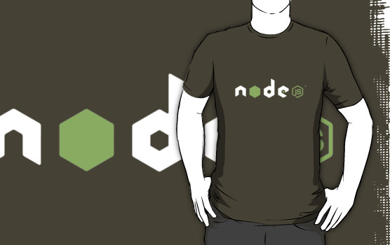

Introduction to Node.js
What's it all about?
Node.js is a platform for building network applications.
It's JavaScript!
Do you hate it?
Then here's Douglas Crockford

And another one
It's only 173 pages!
Use JSLint or...
Or at least

So what is Node.js?
V8
V8 is Google's open source JavaScript engine.
V8 is written in C++ and is used in Google Chrome.
V8 implements ECMAScript, 5th edition...

Core
It's written in C++ and totally open source.
Node.js core consists of 30 .cpp files.
Modules
Some default modules are written in JavaScript.
From the box
- HTTP and HTTP tools
- Filesystem access
- Cryptography
- Child processes
- All traditional JS features
- Utilities etc
Why?
Stylish! Fashionable! Youth!
And simple!
var http = require('http');
http.createServer(function (req, res) {
res.end('Hello World\n');
}).listen(987);
console.log('Server running at localhost:987');
Pros
- Speed and keeping the load*
- New direction in programming. Totally async
- Full stack JavaScript
- Huge active community
- NPM as package system
- Dynamic type system that's handy for web
Cons
- It's a new technology
- Many people still don't know Duglas Crockford
- Callback Hell
- Requires thinking in a new way
New direction in programming
Why C is fast?
Node.js goes it's own way
How it looks
var fs = require("fs");
fs.readFile("foo.txt", "utf8", function(error, data) {
console.log(data);
});
Or with databases
var connection = require('mysql').createConnection({
host: 'localhost',
user: 'userName',
password: 'secret',
database: 'databaseName'
}).connect();
connection.queryRow('SELECT * FROM _Language where LanguageId=3',
function(err, row) {
console.log(data);
}
);
Event loop
Event loop once again

Callback hell

Async flow patterns
- Waterfall
- Series
- Parallel
- etc
Be happy with Async module
async.series([
function(callback){
// do some stuff ...
callback(null, 'one');
},
function(callback){
// do some more stuff ...
callback(null, 'two');
}
],
// optional callback
function(err, results){
// results is now equal to ['one', 'two']
});
Parallel. Something more complex
async.parallel([
function(callback){
setTimeout(function(){
callback(null, 'one');
}, 200);
},
function(callback){
setTimeout(function(){
callback(null, 'two');
}, 100);
}],
function(err, results){
// After all. The results array will equal ['one','two']
});
Node.js Community
Node Package Manager
Growth

Statistics
| 4 020 707 | downloads in the last day |
| 52 461 819 | downloads in the last week |
| 197 149 300 | downloads in the last month |
Total Packages: 69 629
NPM Map
There is all you need
Data access


JavaScript


Testing


Styling

Markup
nodejsmodules.org
You need Node anyway

Potentially it can everything
Features
- Minification
- Linting
- Precompiling
- Zipping
- Uploading/Deployment
- Copying/Deleting/Cleaning
- Embedding images
- etc
It's handy

And easy to set up
jshint: {
// define the files to lint
files: ['gruntfile.js', 'src/**/*.js', 'test/**/*.js'],
// configure JSHint (documented at http://www.jshint.com/docs/)
options: {
// more options here if you want to override JSHint defaults
globals: {
jQuery: true,
console: true,
module: true
}
}
}
Very easy
qunit: {
files: ['test/**/*.html']
},
Everyone likes grunt
Want some more Noding?
Child processes
var cp = require('child_process');
var n = cp.fork(__dirname + '/sub.js');
n.on('message', function(m) {
console.log('PARENT got message:', m);
});
n.send({ hello: 'world' });
sub.js content
process.on('message', function(m) {
console.log('CHILD got message:', m);
});
process.send({ foo: 'bar' });
Clusters
var cluster = require('cluster');
var numCPUs = require('os').cpus().length;
var http = requier('http');
if (cluster.isMaster) { // Fork workers.
for (var i = 0; i < numCPUs; i++) {
cluster.fork();
} else {
http.createServer(function(req, res) {
res.writeHead(200);
res.end("hello world\n");
}).listen(8000);
}
socket.io
var io = require('socket.io').listen(80);
io.sockets.on('connection', function (socket) {
socket.emit('news', { hello: 'world' });
socket.on('my other event', function (data) {
console.log(data);
});
});
Client side
<script>
var socket = io.connect('http://localhost');
socket.on('news', function (data) {
console.log(data);
socket.emit('my other event', { my: 'data' });
});
</script>
Node.js rock-star*

It goes with
- Routing
- Views
- Sessions
- Cookies
- Caching
- Logging
- Error handling
- Who knows what else
Just like Asp but a little better
app.get('/hello.txt', function(req, res){
res.send('Hello World');
});
Here is a view
<ul>
<% for(var i=0; i<supplies.length; i++) {%>
<li><%= supplies[i] %></li>
<% } %>
</ul>
What to read to be a pro